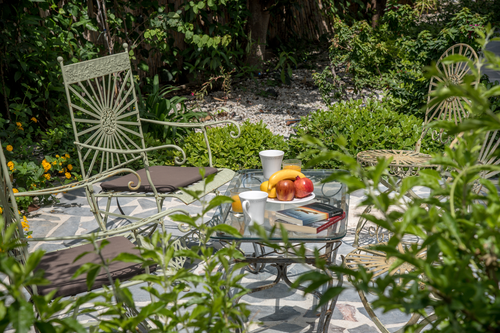
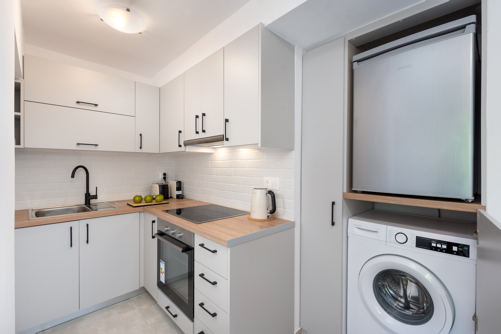
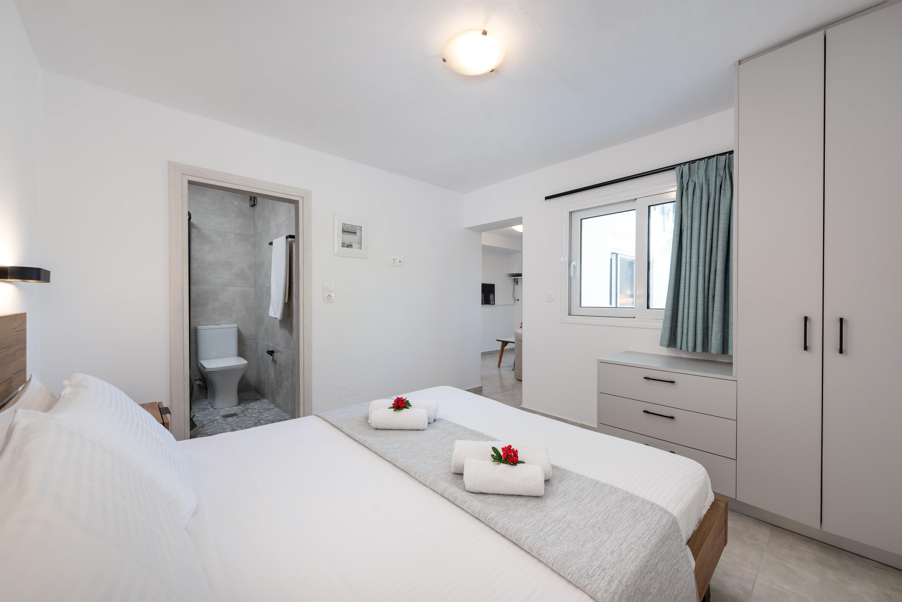
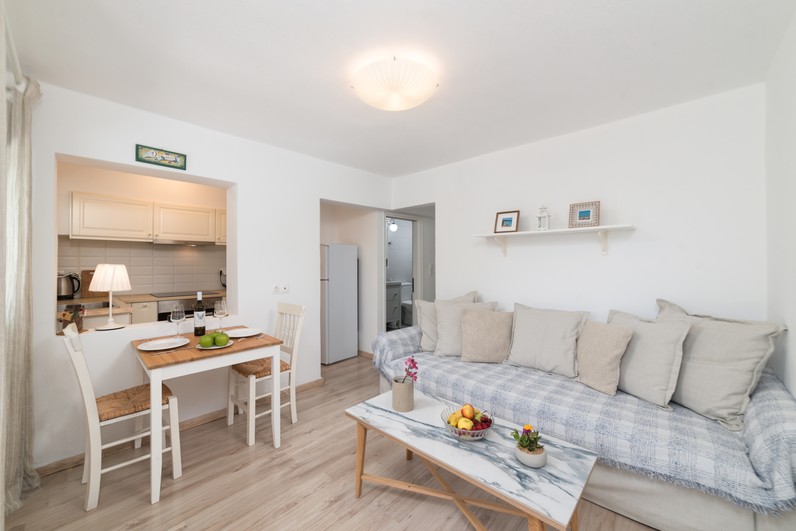
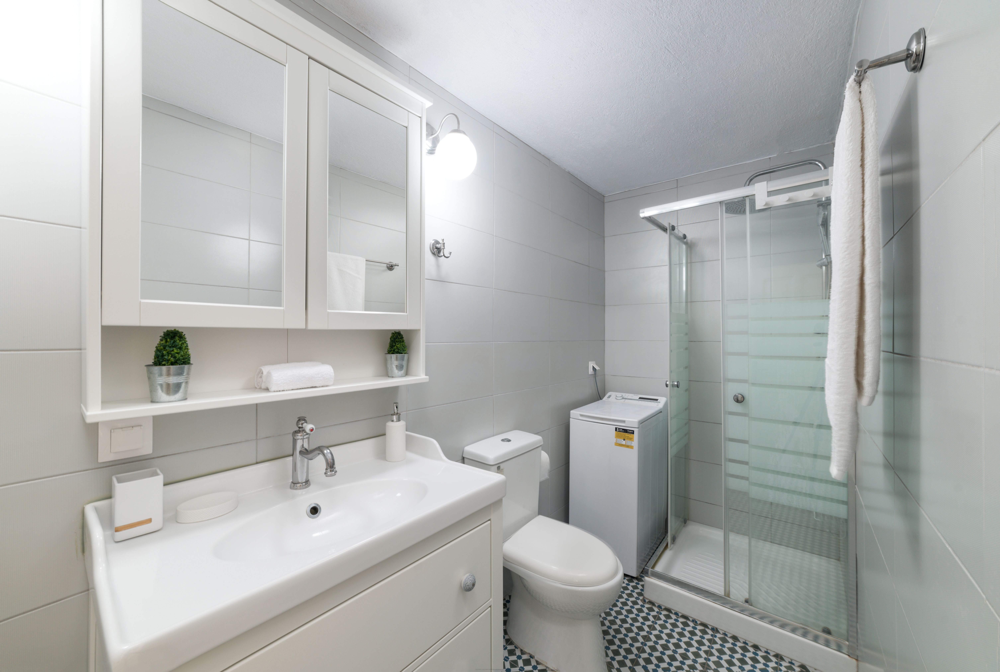

Yiamarin,
Guiet island living
A calm apartment stay in Istro, with the easy rhythm of East Crete. Clean, peaceful, and designed for guests who want simplicity to feel beautiful.


Made for slower mornings and lighter days.
The charm of Yiamarin lies in balance. Clean white interiors, natural light, restful bedrooms, functional kitchens, and outdoor corners designed for slow summer mornings. Rather than loud luxury, the apartments offer something more genuine: comfort, calm, and an easy holiday rhythm near the sea.
Shaded outdoor seating, calm greenery, and space to slow down after the beach.
Clean bedrooms, modern bathrooms, and bright interiors with a relaxed feel.
Reliable Wi-Fi, air conditioning, kitchen essentials, and all you need for a smooth stay.








Close to the sea, still peaceful enough to truly rest.
Yiamarin sits in an area that gives guests the best kind of summer balance. You stay near one of East Crete’s most loved beaches, while keeping the quieter feeling of a residential setting. Agios Nikolaos remains close for dining, evening walks, and town life when you want it. It is a good fit for couples, short summer escapes, and guests who care about cleanliness, comfort, and atmosphere more than visual noise.